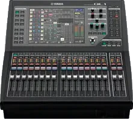

Yamaha QL1
- Consola de mezcla digital de formato compacto con capacidad de procesamiento para 32 canales mono, 8 estéreo, 16 buses de mezcla y 8 buses matriz
- Conectividad física local integrada compuesta por 16 entradas de micrófono/línea y 8 salidas analógicas mediante conectores XLR
- Interfaz de red Dante nativa redundante (32 in / 32 out) para enrutamiento de audio IP y conexión directa con cajetines de escenario serie Rio
- Superficie de control con 16 faders de canal y 2 faders master motorizados de 100 mm junto a una pantalla táctil y sistema "Touch and Turn"
- Motor de procesamiento DSP "Premium Rack" con emulaciones VCM de hardware analógico clásico como los ecualizadores y compresores Rupert Neve Designs Portico
- Sistema de mezcla automática Dan Dugan Sound Design incorporado para la gestión de hasta 16 micrófonos simultáneos en conferencias y eventos broadcast